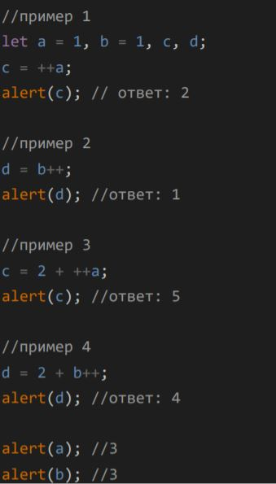

Задание 1 к уроку №2 курса JavaScript от GeekBrains

Комментарии:
- Объявляем переменные 'a', 'b','c','d', присваиваем 'a' значение 1, переменной 'b' значение 1
- Производим префиксное инкрементальное увеличение переменной 'a', полученное значение присваиваем переменной 'c'. 'a'=2
- Во втором примере производится постфиксное инкрементальное увеличение переменной 'b', это означает, что сначала возвращается начальное значение переменной 'b' и данное значение (1) присваивается переменной 'd', и только потом производится увеличение переменной 'b' на единицу. 'b'=2
- В примере 3 сначала приозводится префиксное инкрементальное увеличение переменной 'a', переменная 'a'=3, затем производится сложение 2+3 и результат присваивается переменной 'c'. Выводим значение переменной 'c'. 'a'=3, 'c'=5.
- В четвертом примере сначала возвращается текущее значение переменной 'b', затем произвдится сложение 2+2, результат присваивается переменной 'd'. Потом только производится увеличение переменной 'b' на единицу. 'b'=3 , 'd'=4